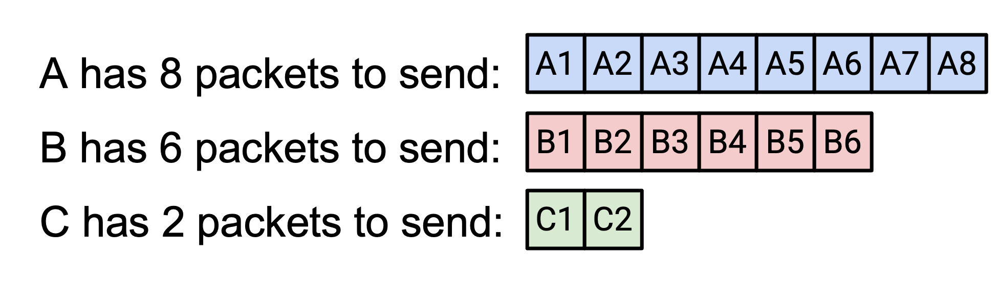
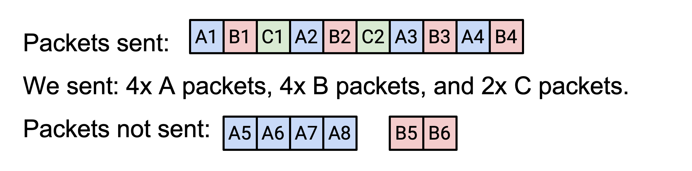
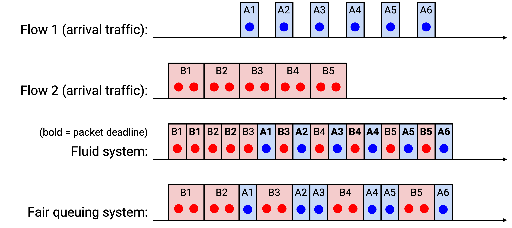

Router-Assisted Congestion Control
Congestion Control with Routers
Previously, we saw some issues with host-based congestion control algorithms. Many of these issues could be fixed with some help from routers!
TCP confuses congestion and corruption. TCP fills up queues, has choppy rates, and performs poorly on short flows, all because hosts need to constantly adjust their rates to detect congestion. If routers could tell the sender about congestion, or even directly tell the sender the ideal rate, then many of these problems could be solved.
Also, if routers enforce fair sharing, then it becomes much harder for hosts to cheat.
More philosophically, it’s a natural design choice to have routers participate in congestion routing. Congestion happens at the routers, so they often have more information about congestion than the hosts.
Router-assisted congestion control can be very effective and result in near-optimal performance (high link utilization, low delays), but deploying these protocols can be challenging. Routers now need to support additional functionality, and sometimes that functionality can be quite complex. Some protocols might even require every router to agree to add that functionality.
Enforcing Fair Queuing
How can a router ensure that every connection gets its fair share?
So far, a router is receiving packets, queuing them if needed, and sending them out, in first-in-first-out (FIFO) order. The router doesn’t care which connection a packet comes from.
In our new model, the router would need to classify packets into connections. (For now, assume the connections are all TCP connections.) This means the router has to look inside the packet to learn the source and destination IP addresses and ports.
To formally define fairness, the router could maintain a separate queue for each connection. When a packet arrives, the router adds the packet to the appropriate queue. Then, the router just needs to pick a queue each time, sending a packet from the front of that queue. As long as the router is picking queues in some fair way, then the router is enforcing fairness across connections.
If all packets are the same size, then the router could pick queues round-robin (send from the first queue, then the second queue, etc.). It turns out that this works, even if not all connections need the same bandwidth. Some connections might queue up packets more slowly than others. If we apply round-robin service to connections of different bandwidth, how do we compute the bandwidth allocated to each connection? For example, suppose we can send 10 packets per second, and A, B, and C sent 8, 6, and 2 packets per second, respectively.

If we sent out packets round-robin, how many packets per second of each type would be sent? We can model this as a resource allocation problem and solve it.

For example, suppose we have a link capacity of 10. Connection A requests 8, B requests 6, and C requests 2. How should we distribute the capacity among the three connections? If we tried to be fair, everybody would receive 3.33. But C only asked for 2, so let’s give C the 2 it asked for, with no extra.
Now we have 8 left over, and A and B still need allocations. If we were fair, each would receive 4. This is less than what they asked for, but we have no way to satisfy their request, so we’ll give each their fair share of 4.
Formally, to define max-min fairness, suppose C is the total bandwidth available to the router. Each connection \(r_i\) has a bandwidth demand, and we have to allocate a bandwidth \(a_i\) to each connection. The max-min bandwidth allocations are \(a_i = \min(f, r_i)\), where \(f\) is the unique value (same value for all connections) such that \(\sum a_i = C\). In this equation, the min term ensures that nobody gets more than they asked for, and the sum constraint ensures that no bandwidth is unused. Intuitively, \(f\) is the fair share that we equally allocate to everybody (hence one \(f\) value for all connections).
Another way to read this equation is: There is some magic fair-share number that we can distribute equally to everybody. If you requested less than the fair share, you get the fair share (no extra). If you requested more than the fair share, you are capped at the fair share, but nobody else gets more than you.
In the previous example, \(f\) was 4. A and B received \(f\) (they wanted more), and C received 2 (it wanted less).
If we apply max-min fairness, the equation guarantees that if you don’t get your full demand, nobody else gets more than you. The round-robin approach is max-min fair (assuming equal packet size).
What if we don’t assume equal packet size? In real life, packet sizes can vary widely (e.g. 40 bytes vs. 1500 bytes). Ideally, we’d like to perform bit-by-bit round robin, where we take turns sending one bit from each connection’s queue. This isn’t practical (we don’t send one bit at a time), but if we applied this theoretically, we could write down the time when the last bit of a packet is sent out, for every packet. We’ll call this the deadline for that packet. Then, a fair approximation would be sending out packets in order of deadline (when their last bit would have been sent ideally).
Fun fact: The paper about simulating fair queuing is extremely influential, and two of the co-authors are Scott Shenker (UC Berkeley faculty) and Srinivasan Keshav (EECS PhD student at the time).
Here’s an example of exact bit-by-bit fair queuing on two connections (when a tie occurs, we pick the packet that arrives first).

Fair Queuing in Practice
What’s good about fair queuing? It ensures isolation between connections, and prevents cheating connections from getting more bandwidth. Connections wouldn’t need to implement TCP (or a TCP-friendly alternative), and can pick their own (possibly unfriendly) congestion control algorithm.
Fundamentally, the benefit of fair queuing is its resilience to external factors like cheating and RTT variations. No matter what, everyone gets a fair share of a given link. But, we still need end hosts to discover and adapt to their fair share (e.g. slow down if they’re requesting too much).
What’s bad about fair queuing? It’s much more complicated than FIFO queuing. The process of computing deadlines is tricky and we have not shown an algorithm for doing so here. Also, routers would need to maintain multiple queues, and do extra parsing work on every packet.
In practice, we can’t implement perfect fair queuing in routers (too complicated to run at high speeds), but approximations do exist (e.g. Deficit Round Robin). Modern routers typically implement approximations, though with fewer queues. Fewer queues means that instead of one queue per connection, isolation is more coarse-grained (e.g. one queue per customer).
Fair queuing cannot eliminate congestion. It is only an alternative way to manage congestion. For example, consider this bottleneck link: It might allocate 0.5 Gbps to each connection, which defeats cheating. But, if the top connection runs at 0.5 Gbps, then 0.4 Gbps will get dropped at the immediate next link. A better allocation would be to send 0.1 Gbps along the top connection, and 0.9 Gbps along the bottom connection.
Fundamentally, the problem is that this bottleneck link doesn’t know what will happen at future (downstream) links. The only way to fix this is to make the sender host slow down (router queuing cannot help).
Fair queuing gives us per-connection fairness, but philosophically, we still have to ask if this is the right model of fairness. As we saw earlier, per-connection fairness means that someone with more connections still gets more bandwidth. Should we instead enforce fairness per source-destination pair, or perhaps per source? Should we penalize connections that use more congested links (hogging more scarce resources)?
Router-Assisted Congestion Control
Fair queuing enforces fairness over a specific link, but it doesn’t tell the sender anything. What if the routers passed information back to the sender to help the sender adjust its rate?
One solution is to have routers directly tell senders the rate they should use. We could add a rate field in packets, and have routers fill in that field with the connection’s fair share. When the packet arrives at the sender, the sender can read the header and set the rate to what the routers said. Now, the sender doesn’t need to dynamically adjust to discover a good rate.
Another solution is to have routers notify senders about congestion (without specifying an exact rate). This is deployed in the form of an Explicit Congestion Notification (ECN) bit in the IP header. If a packet passes through a congested router, the router sets that bit to 1. When the recipient gets a packet with the ECN bit on, the ack reply will also have the ECN bit set, so the sender learns about congestion.
There are many options for when routers set this bit. The router could be paranoid and set the bit frequently, which reduces delay but may lead to underused links. Or, the router could be more reckless and rarely set the bit, which increases delay but results in high link utilization.
There are also many options for how the host reacts when this bit is set. For example, the host could pretend the packet was dropped and adjust accordingly.
What’s good about ECN? It solves the problem of confusing corruption and congestion. It allows routers to warn hosts about congestion earlier (e.g. before the queue is full), which can reduce delays. It’s also lightweight to implement.
In practice, effective ECN requires most or all routers to support this protocol and turn the bit on when necessary. In the modern Internet, the ECN bit is deployed on some, but not all routers. However, the ECN bit can be effective in a small network (e.g. inside a datacenter’s local network) where all routers agree to enable the bit.